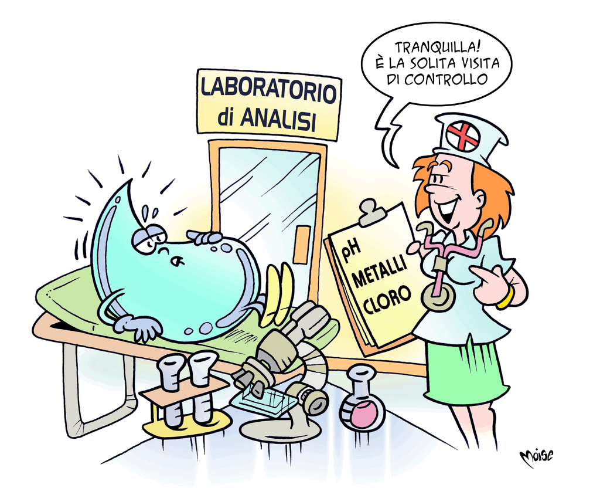

Laboratori di analisi
Ogni giorno sono effettuati nei laboratori controlli e analisi sulla qualità dell'acqua distribuita. Esistono leggi che stabiliscono quali sostanze devono essere assenti e i valori massimi di quelle che, in quantità elevata, potrebbero essere dannose per la salute o cambiare il gusto o il colore dell'acqua.
Il lavoro del laboratorio comincia alla sorgente e segue il percorso dell'acqua, prelevata in diversi punti dell'acquedotto e analizzata per controllare che giunga pura al rubinetto.
La sua purezza è garantita anche dalla sorveglianza sulle attività umane consentite nelle
“zone di rispetto”, costituite per salvaguardare i punti di approvvigionamento idrico. Oltre alle analisi effettuate dalle aziende di gestione del servizio, l'acqua è sottoposta ai controlli delle ARPA (Agenzie Regionali Protezione Ambiente) che ne attestano la potabilità e il rispetto dei parametri stabiliti dalla legge. La qualità è controllata anche in tempo reale con strumenti automatici di misura. Inoltre, sistemi di monitoraggio e controllo consentono di sorvegliare a distanza il buon funzionamento degli impianti, individuando e ponendo rimedio a eventuali anomalie.
